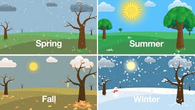

Seasons Page
 Here is a webpage that gives you links to different pages about the four differnt seasons and what i think about them. Each page has a picture and is color cordinated to the season. I put a lot of effort into this page so I really hope you enjoy my work here.